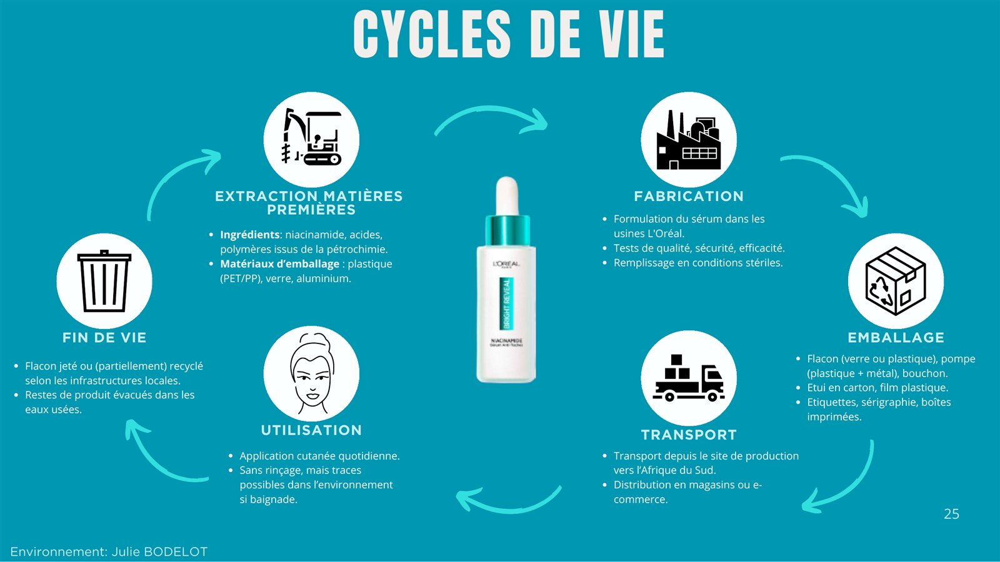
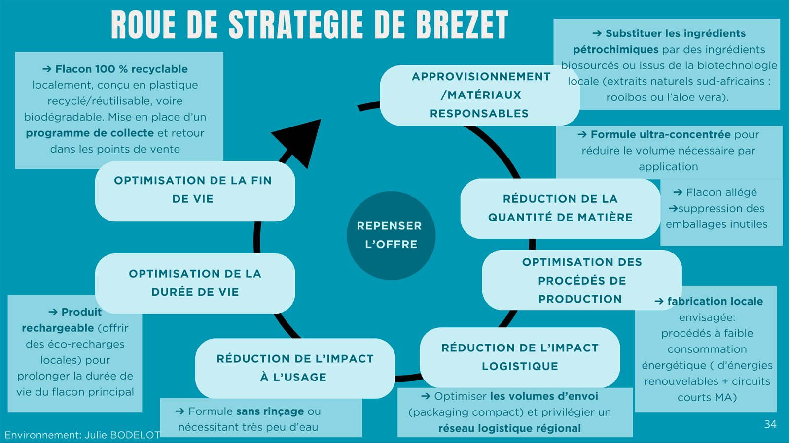
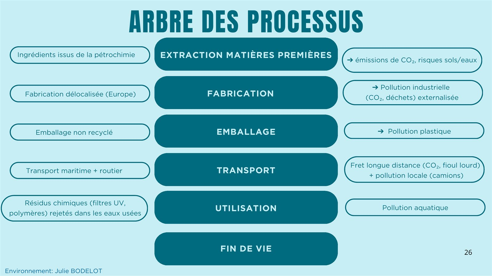

Cycle de vie
Décrire chaque étape du produit A : matières premières, fabrication, emballage, transport, utilisation et fin de vie.
PL. 08 · PROJET ÉCOLE · RSE · 2025
Analyser la démarche RSE d'une multinationale, de sa filiale sud-africaine et d'un de ses produits phares, pour proposer une alternative plus durable et plus inclusive.

01 · LE SUJET
Le principe du projet : choisir une multinationale, une de ses filiales à l'étranger et un produit phare, puis analyser de façon critique sa démarche de responsabilité sociétale, en confrontant ses engagements à la réalité du terrain.
Nous avons travaillé sur L'Oréal en Afrique du Sud. Notre problématique : comment concilier les engagements de l'entreprise en matière de diversité et d'inclusion avec la commercialisation de soins éclaircissants, un sujet culturellement et socialement sensible dans le pays ?
L'objectif final : convaincre la direction, avec des recommandations concrètes à l'horizon 2030 qui relient les piliers environnemental, social et économique.
02 · LA DÉMARCHE
Forces et faiblesses de l'entreprise, objectifs de développement durable, matrice de matérialité et principes de l'ISO 26000.
Contexte sud-africain et parties prenantes de la filiale : qui est impacté, qui est exclu, quelles relations construire.
Analyse du produit actuel (produit A) et conception d'un produit B plus durable, avec la même fonction principale.
Des propositions qui croisent les cinq dimensions : diversité, éthique, environnement, local et stratégie.
03 · MON RÔLE
J'étais chargée de la dimension environnementale, centrée sur le produit étudié : un sérum anti-taches à la niacinamide.
Décrire chaque étape du produit A : matières premières, fabrication, emballage, transport, utilisation et fin de vie.
Identifier les pollutions associées à chaque étape, en amont comme en aval de l'utilisation.
Analyser les contraintes sociétales, réglementaires, concurrentielles et naturelles qui pèsent sur le produit.
Garder la même fonction principale, mais avec une formule plus sûre, adaptée à tous les types de peau, et un emballage recyclé.
Traduire le produit B en leviers concrets : ingrédients locaux biosourcés, formule concentrée, fabrication locale, flacon rechargeable et collecte.
Montrer quelles crises à venir rendent ce changement nécessaire, et quels futurs clients en ont besoin.
04 · EN IMAGES


05 · COMPÉTENCES ACQUISES
Comprendre la démarche RSE d'un grand groupe et ses outils : ODD, matrice de matérialité, ISO 26000.
Analyser l'impact environnemental d'un produit sur tout son cycle de vie et proposer des améliorations concrètes.
Confronter le discours d'une entreprise à ses pratiques, et défendre un point de vue argumenté.
Cartographier les acteurs d'un territoire et les relations qu'une entreprise entretient avec eux.
Faire converger les analyses de cinq référents différents vers une même démonstration.
Construire une présentation pensée pour persuader une direction d'investir dans le développement durable.
06 · OUTILS UTILISÉS
07 · EN CONCLUSION
Ce projet m'a appris à regarder un produit au-delà de sa fonction : d'où viennent ses matières, ce qu'il pollue, à qui il s'adresse et ce qu'il dit des valeurs de l'entreprise qui le vend.
Une approche de l'éco-conception que je retiens aussi pour l'aéronautique, où les enjeux environnementaux deviennent incontournables.